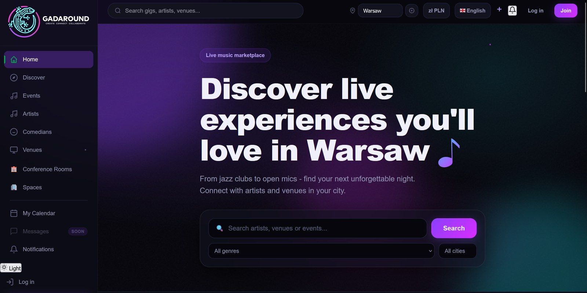

☁️ GadAround on Google Cloud
Migration of a startup's event-marketplace app from a local SQLite setup to Google Cloud (Cloud Run and Cloud SQL), with a CI/CD pipeline that needs no stored keys and a custom domain served through a Cloudflare reverse proxy.
Live site (gadaround.pl) · Repository: private (startup code)

Why this project
GadAround is an early-stage marketplace that connects artists, venues and event-goers: event discovery by genre, artist and venue directories, event creation, a calendar and a multilingual interface. I joined the two-person team as the AI/ML developer, and the first thing the product needed was a reliable place to run. The app existed as a Flask monolith on SQLite, so I took over the move to a managed cloud setup and the delivery pipeline around it. This page covers that infrastructure work; it does not describe the application's features or its AI components.
What was delivered
| Area | Result |
|---|---|
| Hosting | Flask app on Cloud Run (region europe-central2), multi-container deployment defined in a service YAML |
| Database | SQLite replaced by PostgreSQL on Cloud SQL (small shared tier), reached through a Cloud SQL Auth Proxy sidecar |
| Secrets | Database URL and app key in Secret Manager, nothing in the repository |
| Cost control | Monthly budget limit of 200 PLN |
| CI/CD | Merge dev → main builds a Docker image, pushes it to Artifact Registry and deploys to Cloud Run |
| Authentication to GCP | Workload Identity Federation from GitHub Actions, no JSON keys |
| Domain | gadaround.pl and www served through Cloudflare, ownership verified in Google Search Console |
Architecture
GitHub (dev → main) → GitHub Actions → Docker image → Artifact Registry
→ Cloud Run service
Browser → Cloudflare (DNS + Worker reverse proxy) → Cloud Run [app + Cloud SQL Auth Proxy] → Cloud SQL (PostgreSQL)
- Deployment unit: two containers in one Cloud Run revision: the app and the Cloud SQL Auth Proxy, so the app reaches the database through the proxy.
- Pipeline: a merge into
mainbuilds and pushes the image and applies the service definition withgcloud run services replace. The run is checked by an HTTP 200 response after deployment. - Keyless authentication: the GitHub provider is restricted to one repository and the
mainbranch, and the service account has only the roles the pipeline needs (Cloud Run admin, Artifact Registry writer, service account user). - Custom domain: Cloud Run domain mappings are not available in europe-central2, and Firebase Hosting was ruled out because it strips cookies (the app relies on session, CSRF and language cookies). I chose Cloudflare's free plan with a Worker as a reverse proxy that forwards the original host header and rewrites redirect
Locationheaders.
Security
- Rotated the application database user's password and the app secrets, and disabled the old secret versions.
- Reviewed IAM roles and access; the second developer works through GitHub on a
devbranch with limited permissions. - The repository is private and stays under my control until the collaboration terms are settled.
Testing
What is verified
- The pipeline has run end to end: merge to
main, image build, push and deployment, ending with an HTTP 200 from the service. - The domain is active and the site loads at
gadaround.plandwww.gadaround.pl.
Not covered
- Login and cookie behaviour through the Cloudflare proxy on
gadaround.plis not yet tested end to end. - Rollback (shifting traffic back to a previous Cloud Run revision) is documented but not rehearsed.
- No load or failover testing, and this page does not cover the application's own test suite.
Limitations
- A runbook (branches, auto-deploy, rollback, local work with docker-compose) is written but not yet merged into
main, and it has no section on Cloudflare yet. - The setup targets an early-stage product: a small shared Cloud SQL tier, one region and no high availability.
- The project is a startup's private code base, so the repository cannot be shown; I can walk through the architecture and the pipeline on request.
Tech stack: Google Cloud Run, Cloud SQL (PostgreSQL), Secret Manager, Artifact Registry, Workload Identity Federation, Docker, GitHub Actions, Cloudflare (DNS, Workers), Python, Flask.
Related: the Carbon Nanotubes RAG System and the Scientific Research Agent both run automated tests on every push through GitHub Actions, and the Research Agent documents its threat model in a spec.